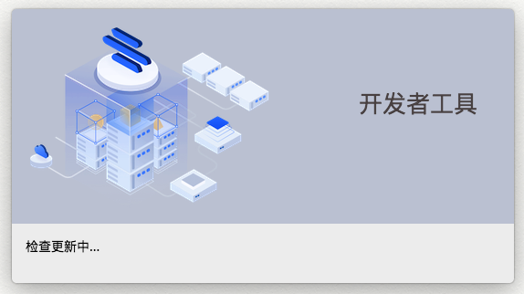

开发者工具简介
启动页
小程序定制
组件定制
组件定制
sdk介绍
全局sdk
下单页sdk
商品详情页sdk
整页定制
自定义页面
预加载配置
小程序瘦身
H5定制
组件定制
整页定制
PC定制
微页面编辑器定制
设计平台
h5端组件开发
编辑器开发
Published with GitBook
启动页
开始使用
启动更新页

登录页
输入有赞云注册手机号 及 gitToken
项目管理页
在项目管理页可以选择h5定制、小程序定制、pc定制模式
导入项目： 输入名称；选择项目目录
管理： 删除项目
results matching "
"
No results matching "
"